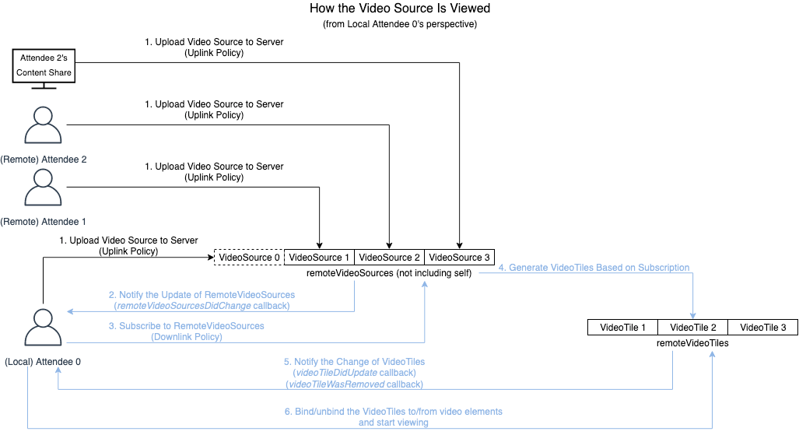
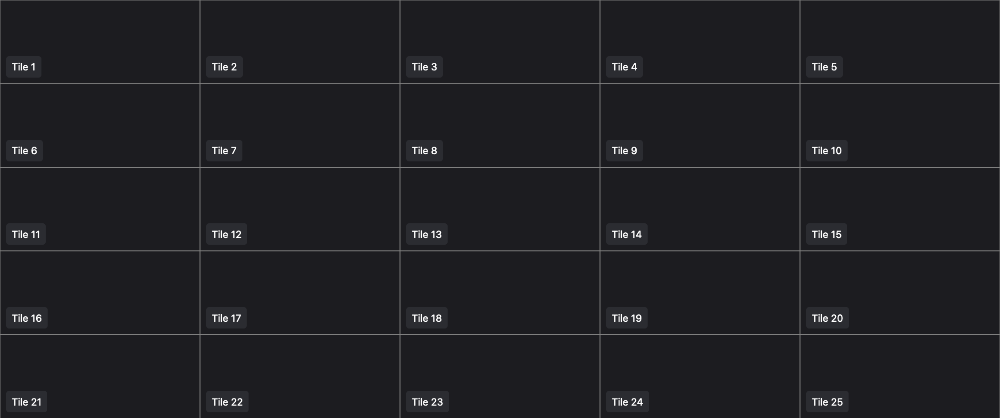
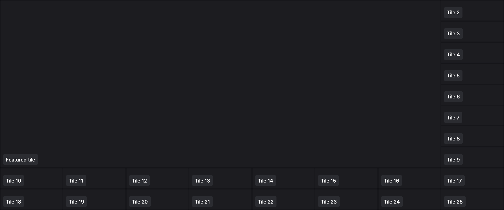
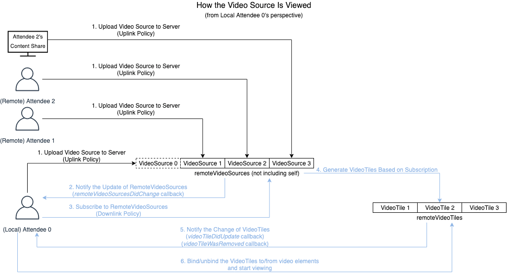
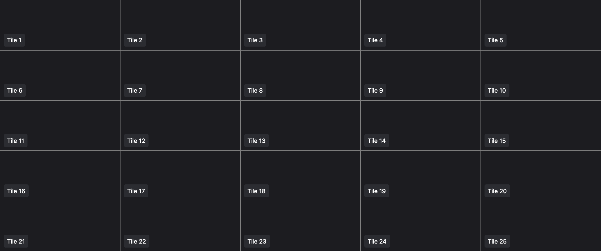
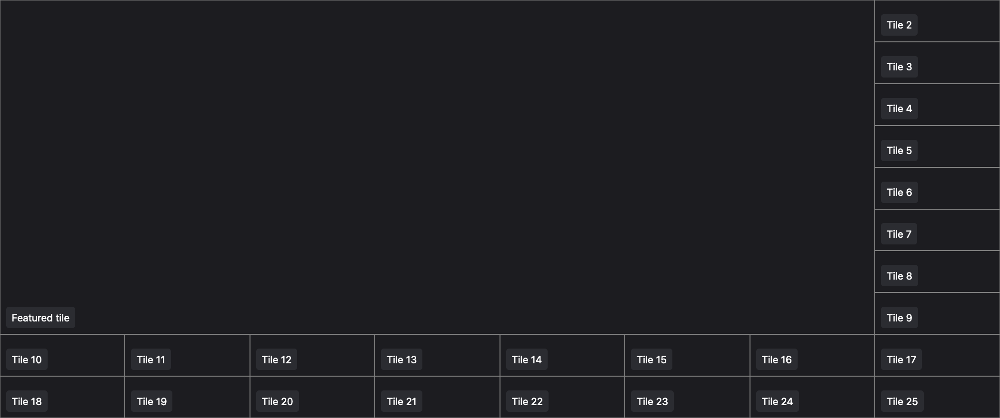

The Amazon Chime SDK for JavaScript enables builders to create applications with custom and dynamic video layouts. Depending on the number of video tiles displayed on the screen, their relative display size and priority, different video upstream strategies and tile management methods are applied to provide the optimal video experience for end users.
The first section introduces basic concepts, such as video lifecycle management APIs and the uplink/downlink policies. The second section discusses several common use cases and how to implement them using the Amazon Chime SDK for JavaScript (“JavaScript SDK”) and the Amazon Chime SDK React Components Library (“React Components Library”).
Consider the following scenario: A meeting includes three attendees: attendee 0, attendee 1, and attendee 2. They are all sharing their local camera stream in a meeting, and attendee 2 is also sharing the screen via content share. The diagram below illustrates how all the video streams are received and managed from the perspective of attendee 0.

Typically, there are four steps involved in the lifecycle of a remote video with respect to a single receiving attendee:
As remote attendees change their video stream, an up-to-date list of remote video sources is provided via the remoteVideoSourcesDidChange callback.
The receiving attendee will select the remote video sources (and possibly which simulcast layer) that they wish to receive, which will initiate a negotiation (or “subscription”) with the backend servers to start forwarding the selected remote video sources, depending on the attendee’s downlink policy (explained in a later section).
Note: Some downlink policies may expose APIs to allow dynamic control over this decision, e.g., VideoPriorityBasedPolicy.
For each subscribed/unsubscribed video, the receiving attendee will receive the tileId of the updated VideoTile from videoTileDidUpdate/videoTileWasRemoved callback.
To display/remove the video, the receiving attendee can bind/unbind the updated VideoTile to/from a HTMLVideoElement in their application using the bindVideoElement(tileId)/unbindVideoElement(tileId) API.
Uplink and downlink policies help builders configure the video strategies for sending and receiving video streams in a meeting. The Amazon Chime SDK for JavaScript provides different policies, each with its own configuration and dynamic controls. Builders can choose between the provided policies or extend and create their own, depending on the requirements.
The video encoding parameters are determined by the uplink policy, which takes into consideration the number of video publishers on the call. If necessary, it may suggest encoding multiple “simulcast” layers (with different bitrates and resolutions). The JavaScript SDK currently provides two uplink policies:
In this policy, an attendee encodes and sends one video layer upstream and scales the resolution and bitrate based on the number of video publishers. This is to ensure the receiving attendees who are subscribed to these videos do not experience excessive network or compute load, which may degrade the meeting quality.
Each attendee may encode and send up to two layers of video with different bitrates and resolutions under this policy. It enables the recipient to switch between the two video layers to adapt to changing network conditions or different layouts (e.g., a featured video may desire a higher resolution than a gallery view video).
Note: The SimulcastUplinkPolicy is currently only supported in Chrome 76 and above versions.
The downlink policy controls which remote video sources are received downstream based on the network condition, local resources (e.g., CPU), and other factors such as layout changes in the application. The JavaScript SDK currently provides two downlink policies:
This policy subscribes to the highest quality video layer of all publishers. This policy allows builders to choose which remote video sources to subscribe to through the use of chooseRemoteVideoSources api. Under constrained network, some or all videos may freeze as packets are lost on the network, and they will recover automatically once network congestion is reduced.
This policy allows builders to choose and configure which remote video sources to subscribe to, their relative priorities and preferences such as, targetDisplaySize . Under constrained network, the policy will automatically pause video tiles based on the priorities you set to these remote video sources until recovery. If used with the SimulcastUplinkPolicy, the policy may temporarily degrade to lower resolutions. For videos of the same priority, the policy first tries to allocate bandwidth to ensure as many videos can be displayed as possible before upgrading to higher quality if the bandwidth allows.
Note: The VideoPriorityBasedPolicy uses webRTC's available downlink bandwidth estimate, which has not been
supported in Firefox yet, the policy should be only used in Chrome and Safari.
We recommend the default configuration of the NScaleVideoUplinkBandwidthPolicy and AllHighestVideoBandwidthPolicy when displaying a small number of video tiles of a fixed size, so the recipient is less likely to get overwhelmed. Video freezes can occur due to network congestion and recover automatically.
The videoTileDidUpdate and videoTileWasRemoved callbacks are already handled by the React Components Library. If you don’t have the content sharing functionality in your application, you can use the VideoTileGrid component with the standard layout from the React Components Library.
While the JavaScript SDK supports viewing up to 25 video tiles at this time, as the number of video publishers increases, the bandwidth and CPU consumption of receiving attendees may not be sufficient to display all videos.

The default setting of NScaleVideoUplinkBandwidthPolicy and AllHighestVideoBandwidthPolicy can result in video freezes as the number of videos goes up and more videos have to be decoded. Video packet loss and network delays are a result of high CPU consumption and can impact all streams equally. This may not be acceptable if the application wishes to preserve certain videos over others, and it can be mitigated by the application directly calling the pauseReceivingStream(streamId) API to pause certain videos. You can get the streamId via VideoTile.stateRef().streamId.
The VideoPriorityBasedPolicy is recommended as the downlink policy if you wish to proactively pause (video will not be displayed) some videos to save the bandwidth in order to preserve others. This gives the application builder more control and makes the impact on the video experience resulting from network constraints more predictable. The VideoPriorityBasedPolicy triggers tileWillBePausedByDownlinkPolicy and tileWillBeUnpausedByDownlinkPolicy callbacks if video tiles are automatically paused or unpaused so that you can properly notify the users and potentially replace the empty video tile with something like avatars to reduce the visual impact.
If you don’t have content sharing functionality in your application, you can use the VideoTileGrid component with the standard layout from React Components Library. Otherwise, you need to build a custom video grid using the components and hooks from the React Components Library. Refer to the implementation part under case 1 for details.
Create a meetingConfig object to store the configuration of MeetingProvider. This configuration is passed down to the MeetingManager and is used to initialize the MeetingSession when joining a meeting.
// Create a file named 'meetingConfig.ts'.import {
ConsoleLogger,
LogLevel,
VideoPriorityBasedPolicy,
} from'amazon-chime-sdk-js';
// Initialize `VideoPriorityBasedPolicy` and export it to use elsewhere.const logger = new ConsoleLogger('SDK', LogLevel.INFO);
exportconst priorityBasedPolicy = new VideoPriorityBasedPolicy(logger);
const meetingConfig = {
logger,
videoDownlinkBandwidthPolicy: priorityBasedPolicy,
};
exportdefault meetingConfig;
Setup the MeetingProvider using the meetingConfig.
Import the previous VideoPriorityBasedPolicy instance in your provider.
Create an observer and subscribe to the tileWillBePausedByDownlinkPolicy and tileWillBeUnpausedByDownlinkPolicy callbacks, so you can update the UI to notify the user that the related video tile has been paused or unpaused.
Create an observer and subscribe to the remoteVideoSourcesDidChange callback, so you can track the states of remote video sources for future subscriptions. You need a variable like roster: any = {} to keep track of which attendees in the meeting are publishing videos. Check use case 24 for more details.
Note: You may want to keep the content sharing in your roster, depending on your needs.
import { useAudioVideo } from'amazon-chime-sdk-component-library-react';
import { priorityBasedPolicy } from'./meetingConfig';
const GridStateProvider: React.FC = ({ children }) => {
const audioVideo = useAudioVideo();
// Subscribe to `tileWillBePausedByDownlinkPolicy` and// `tileWillBeUnpausedByDownlinkPolicy` callbacks.
useEffect(() => {
if (!priorityBasedPolicy || !audioVideo) {
return;
}
const observer: VideoDownlinkObserver = {
tileWillBePausedByDownlinkPolicy: (tileId: number): void => {
const attendeeId = audioVideo.getVideoTile(tileId)?.state().boundAttendeeId;
if (attendeeId) {
// Update the UI to notify user the pause of// video tile according to below property.
roster[attendeeId].paused = true;
}
},
tileWillBeUnpausedByDownlinkPolicy: (tileId: number): void => {
const attendeeId = audioVideo.getVideoTile(tileId)?.state().boundAttendeeId;
if (attendeeId) {
// Update the UI to notify user the unpause// of video tile according to below property.
roster[attendeeId].paused = false;
}
},
};
priorityBasedPolicy.addObserver(observer);
return (): void => priorityBasedPolicy.removeObserver(observer);
}, [audioVideo]);
// Subscribe to `remoteVideoSourcesDidChange` callback.
useEffect(() => {
if (!audioVideo) {
return;
}
const observer: AudioVideoObserver = {
remoteVideoSourcesDidChange: (videoSources: VideoSource[]): void => {
// Update your `roster` object to track the remote video sources state.for (const attendeeId in roster) {
roster[attendeeId].hasVideo = false;
}
for (const source of videoSources) {
const attendeeId = source.attendee.attendeeId;
roster[attendeeId].hasVideo = true;
}
},
};
audioVideo.addObserver(observer);
return (): void => audioVideo.removeObserver(observer);
}, [audioVideo]);
return (
<GridStateContext.Providervalue={value} >
{ children }
</GridStateContext.Provider>
);
};
VideoPreference(attendeeId, priority, targetSize?)
// `attendeeId: string`: Attendee ID of the video source.// `priority: number`: The relative priority of this video source against others.// `targetSize?: TargetDisplaySize`: The desired maximum simulcast layers to receive.
Note: The targetSize doesn't work in this example, since NScaleVideoUplinkBandwidthPolicy only publishes one layer.
// In this example, only render up to ten remote video sources.const updateVideoPreferences = () => {
// Initialize `VideoPreferences`.const videoPreferences = VideoPreferences.prepare();
let numVideos = 0;
for (const attendeeId in roster) {
if (roster[attendeeId].hasVideo && numVideos < 10) {
// Subscribe to the first ten remote video sources// and set highest priority for them.
videoPreferences.add(
new VideoPreference(attendeeId, 1, TargetDisplaySize.High)
);
numVideos += 1;
}
// The remaining remote video sources are not subscribed,// so they do not cost bandwidth.
}
priorityBasedDownlinkPolicy.chooseRemoteVideoSources(
videoPreferences.build()
);
};
The featured layout is designed to focus on important video sources such as an active speaker or content share. The featured tile displays a video source in a large area while other video sources (up to 25 video tiles) are displayed as smaller tiles.

For layouts where all users feature the same content source or active speaker, the NScaleVideoUplinkBandwidthPolicy and VideoPriorityBasedPolicy are recommended. The NScaleVideoUplinkBandwidthPolicy automatically prioritizes the content share and boosts the resolution of the active speaker video. The VideoPriorityBasedPolicy ensures the bandwidth is efficiently used to display only the video in the featured tile.
Note: Ensure that you’re listening to changes in active speakers and passing them to the VideoPriorityBasedPolicy.
Setup the VideoPriorityBasedPolicy, as described in case 2.
Listen to the changes in active speakers and track their states.
import { DefaultActiveSpeakerPolicy } from'amazon-chime-sdk-js';
const activeSpeakerCallback = (attendeeIds: string[]): void => {
// Reset `active` propertyfor (const attendeeId in roster) {
roster[attendeeId].active = false;
}
// Set `active` to true for the most active speaker.// The `attendeeIds` returned by the `activeSpeakerCallback`// are sorted by the most activefor (const attendeeId of attendeeIds) {
if (roster[attendeeId]) {
roster[attendeeId].active = true;
break;
}
}
// Update video preferences whenever there are changes of active speakers.
updateVideoPreferences();
};
meetingSession.audioVideo.subscribeToActiveSpeakerDetector(
new DefaultActiveSpeakerPolicy(),
activeSpeakerCallback
);
Update video preferences whenever there are changes to active speakers.
// Video source priority in this example:// Content share > active speakers > othersconst updateVideoPreferences = () => {
// Initialize `VideoPreferences`.const videoPreferences = VideoPreferences.prepare();
for (const attendeeId in roster) {
if (roster[attendeeId].hasVideo) {
if (
new DefaultModality(attendeeId).hasModality(
DefaultModality.MODALITY_CONTENT
)
) {
// Prioritize content share.
videoPreferences.add(
new VideoPreference(attendeeId, 1, TargetDisplaySize.High)
);
} elseif (roster[attendeeId].active) {
// Prioritize active speakers.
videoPreferences.add(
new VideoPreference(attendeeId, 2, TargetDisplaySize.High)
);
} else {
// Handle the rest of video sources.
videoPreferences.add(
new VideoPreference(attendeeId, 3, TargetDisplaySize.Low)
);
}
}
}
priorityBasedDownlinkPolicy.chooseRemoteVideoSources(
videoPreferences.build()
);
};
You can use the VideoTileGrid component from the React Components Library. The featured layout is used by default.
Note: The featured layout VideoTileGrid component displays either the content sharing video or the active speaker video in the featured tile. If both are present, the content sharing video is displayed. If neither is present, there is no featured tile and all video tiles are of fixed and equal size, like in the gallery layout.
Then create a provider to handle the VideoPriorityBasedPolicy and video preferences update logic.
Setup VideoPriorityBasedPolicy, as described in the case 2.
Listen to the changes in active speakers and track their states.
The React Components Library provides the useActiveSpeakersState hook that returns a list of attendee IDs of the active speaker. Use this hook directly.
import { useAudioVideo, useActiveSpeakersState } from'amazon-chime-sdk-component-library-react';
import { priorityBasedPolicy } from'./meetingConfig';
const GridStateProvider: React.FC = ({ children }) => {
const audioVideo = useAudioVideo();
const activeSpeakers = useActiveSpeakersState();
// Set up observers and subscribe to callbacks.// ...
useEffect(() => {
// Reset `active` propertyfor (const attendeeId in roster) {
roster[attendeeId].active = false;
}
// Set `active` to true for the most active speaker.// The `activeSpeakers` returned by the `useActiveSpeakersState`// hook are sorted by the most active.for (const attendeeId of activeSpeakers) {
if (roster[attendeeId]) {
roster[attendeeId].active = true;
break;
}
}
// Update video preferences whenever there are changes of active speakers.
updateVideoPreferences();
}, [activeSpeakers]);
return (
<GridStateContext.Providervalue= {value } >
{ children }
</GridStateContext.Provider>
);
};
Update video preferences whenever there are changes to active speakers, as described in the above JavaScript SDK Implementation.
For layouts where different users feature different videos, the SimulcastUplinkPolicy and VideoPriorityBasedPolicy are recommended. The SimulcastUplinkPolicy sends multiple resolutions of the same video to the Chime servers. The TargetDisplaySize property can be specified according to the layout for each user in the VideoPriorityBasedPolicy, which allows for featured video to be rendered in high quality and the other videos are efficiently rendered according to display size.
Managing Video Quality for Different Video Layouts
Overview
The Amazon Chime SDK for JavaScript enables builders to create applications with custom and dynamic video layouts. Depending on the number of video tiles displayed on the screen, their relative display size and priority, different video upstream strategies and tile management methods are applied to provide the optimal video experience for end users.
The first section introduces basic concepts, such as video lifecycle management APIs and the uplink/downlink policies. The second section discusses several common use cases and how to implement them using the Amazon Chime SDK for JavaScript (“JavaScript SDK”) and the Amazon Chime SDK React Components Library (“React Components Library”).
Introduction
Video Lifecycle Management APIs
Consider the following scenario: A meeting includes three attendees: attendee 0, attendee 1, and attendee 2. They are all sharing their local camera stream in a meeting, and attendee 2 is also sharing the screen via content share. The diagram below illustrates how all the video streams are received and managed from the perspective of attendee 0.

Typically, there are four steps involved in the lifecycle of a remote video with respect to a single receiving attendee:
As remote attendees change their video stream, an up-to-date list of remote video sources is provided via the
remoteVideoSourcesDidChangecallback.The receiving attendee will select the remote video sources (and possibly which simulcast layer) that they wish to receive, which will initiate a negotiation (or “subscription”) with the backend servers to start forwarding the selected remote video sources, depending on the attendee’s downlink policy (explained in a later section).
VideoPriorityBasedPolicy.For each subscribed/unsubscribed video, the receiving attendee will receive the
tileIdof the updatedVideoTilefromvideoTileDidUpdate/videoTileWasRemovedcallback.To display/remove the video, the receiving attendee can bind/unbind the updated
VideoTileto/from aHTMLVideoElementin their application using thebindVideoElement(tileId)/unbindVideoElement(tileId)API.Video Uplink and Downlink Policies
Uplink and downlink policies help builders configure the video strategies for sending and receiving video streams in a meeting. The Amazon Chime SDK for JavaScript provides different policies, each with its own configuration and dynamic controls. Builders can choose between the provided policies or extend and create their own, depending on the requirements.
Uplink Policy
The video encoding parameters are determined by the uplink policy, which takes into consideration the number of video publishers on the call. If necessary, it may suggest encoding multiple “simulcast” layers (with different bitrates and resolutions). The JavaScript SDK currently provides two uplink policies:
NScaleVideoUplinkBandwidthPolicy (Default)
In this policy, an attendee encodes and sends one video layer upstream and scales the resolution and bitrate based on the number of video publishers. This is to ensure the receiving attendees who are subscribed to these videos do not experience excessive network or compute load, which may degrade the meeting quality.
SimulcastUplinkPolicy
Each attendee may encode and send up to two layers of video with different bitrates and resolutions under this policy. It enables the recipient to switch between the two video layers to adapt to changing network conditions or different layouts (e.g., a featured video may desire a higher resolution than a gallery view video).
SimulcastUplinkPolicyis currently only supported in Chrome 76 and above versions.Downlink Policy
The downlink policy controls which remote video sources are received downstream based on the network condition, local resources (e.g., CPU), and other factors such as layout changes in the application. The JavaScript SDK currently provides two downlink policies:
AllHighestVideoBandwidthPolicy (Default)
This policy subscribes to the highest quality video layer of all publishers. This policy allows builders to choose which remote video sources to subscribe to through the use of
chooseRemoteVideoSourcesapi. Under constrained network, some or all videos may freeze as packets are lost on the network, and they will recover automatically once network congestion is reduced.VideoPriorityBasedPolicy
This policy allows builders to choose and configure which remote video sources to subscribe to, their relative priorities and preferences such as,
targetDisplaySize. Under constrained network, the policy will automatically pause video tiles based on the priorities you set to these remote video sources until recovery. If used with theSimulcastUplinkPolicy, the policy may temporarily degrade to lower resolutions. For videos of the same priority, the policy first tries to allocate bandwidth to ensure as many videos can be displayed as possible before upgrading to higher quality if the bandwidth allows.VideoPriorityBasedPolicyuses webRTC's available downlink bandwidth estimate, which has not been supported in Firefox yet, the policy should be only used in Chrome and Safari.Recommendations for Common Layouts
Case 1: Small Grid Layout (up to 4 Videos) with Fixed Tile Size
We recommend the default configuration of the
NScaleVideoUplinkBandwidthPolicyandAllHighestVideoBandwidthPolicywhen displaying a small number of video tiles of a fixed size, so the recipient is less likely to get overwhelmed. Video freezes can occur due to network congestion and recover automatically.JavaScript SDK Implementation
Refer to code sample in Use case 16.
React Components Library Implementation
The
videoTileDidUpdateandvideoTileWasRemovedcallbacks are already handled by the React Components Library. If you don’t have the content sharing functionality in your application, you can use theVideoTileGridcomponent with thestandardlayout from the React Components Library.import { MeetingProvider, VideoTileGrid } from 'amazon-chime-sdk-component-library-react'; const App = () => ( <MeetingProvider> <VideoTileGrid layout="standard"/> </MeetingProvider> );Otherwise, you need to build a custom video grid using the components and hooks from the React Components Library.
import { LocalVideo, RemoteVideos, useLocalVideo, useRemoteVideoTileState, VideoGrid, } from 'amazon-chime-sdk-component-library-react'; const fluidStyles = ` height: 100%; width: 100%; `; const staticStyles = ` display: flex; position: absolute; bottom: 1rem; right: 1rem; width: 20vw; max-height: 30vh; height: auto; video { position: static; } `; export const GalleryVideoTileGrid: React.FC = () => { const { tiles } = useRemoteVideoTileState(); const { isVideoEnabled } = useLocalVideo(); const gridSize = isVideoEnabled ? tiles.length + 1 : tiles.length; return ( <VideoGrid size={gridSize} layout='standard'> <RemoteVideos /> <LocalVideo nameplate="Me" css={gridSize > 1 ? fluidStyles : staticStyles} /> </VideoGrid> ); }; export default GalleryVideoTileGrid;Case 2: Gallery Layout (up to 25 Videos) with Fixed Tile Size
While the JavaScript SDK supports viewing up to 25 video tiles at this time, as the number of video publishers increases, the bandwidth and CPU consumption of receiving attendees may not be sufficient to display all videos.

The default setting of
NScaleVideoUplinkBandwidthPolicyandAllHighestVideoBandwidthPolicycan result in video freezes as the number of videos goes up and more videos have to be decoded. Video packet loss and network delays are a result of high CPU consumption and can impact all streams equally. This may not be acceptable if the application wishes to preserve certain videos over others, and it can be mitigated by the application directly calling thepauseReceivingStream(streamId)API to pause certain videos. You can get thestreamIdviaVideoTile.stateRef().streamId.The
VideoPriorityBasedPolicyis recommended as the downlink policy if you wish to proactively pause (video will not be displayed) some videos to save the bandwidth in order to preserve others. This gives the application builder more control and makes the impact on the video experience resulting from network constraints more predictable. TheVideoPriorityBasedPolicytriggerstileWillBePausedByDownlinkPolicyandtileWillBeUnpausedByDownlinkPolicycallbacks if video tiles are automatically paused or unpaused so that you can properly notify the users and potentially replace the empty video tile with something like avatars to reduce the visual impact.JavaScript SDK Implementation
Refer to code sample in User Guide for PriorityBased Downlink Policy and use case 24.
React Components Library Implementation
If you don’t have content sharing functionality in your application, you can use the
VideoTileGridcomponent with thestandardlayout from React Components Library. Otherwise, you need to build a custom video grid using the components and hooks from the React Components Library. Refer to the implementation part under case 1 for details.Create a
meetingConfigobject to store the configuration ofMeetingProvider. This configuration is passed down to theMeetingManagerand is used to initialize theMeetingSessionwhen joining a meeting.// Create a file named 'meetingConfig.ts'. import { ConsoleLogger, LogLevel, VideoPriorityBasedPolicy, } from 'amazon-chime-sdk-js'; // Initialize `VideoPriorityBasedPolicy` and export it to use elsewhere. const logger = new ConsoleLogger('SDK', LogLevel.INFO); export const priorityBasedPolicy = new VideoPriorityBasedPolicy(logger); const meetingConfig = { logger, videoDownlinkBandwidthPolicy: priorityBasedPolicy, }; export default meetingConfig;Setup the
MeetingProviderusing themeetingConfig.import { MeetingProvider } from 'amazon-chime-sdk-component-library-react'; import meetingConfig from './meetingConfig'; const App = () => ( <MeetingProvider {...meetingConfig}> <MyApp /> </MeetingProvider> );Create a
Context Providerto usepriorityBasedDownlinkPolicy.Import the previous
VideoPriorityBasedPolicyinstance in your provider.Create an observer and subscribe to the
tileWillBePausedByDownlinkPolicyandtileWillBeUnpausedByDownlinkPolicycallbacks, so you can update the UI to notify the user that the related video tile has been paused or unpaused.Create an observer and subscribe to the
remoteVideoSourcesDidChangecallback, so you can track the states of remote video sources for future subscriptions. You need a variable likeroster: any = {}to keep track of which attendees in the meeting are publishing videos. Check use case 24 for more details.roster, depending on your needs.import { useAudioVideo } from 'amazon-chime-sdk-component-library-react'; import { priorityBasedPolicy } from './meetingConfig'; const GridStateProvider: React.FC = ({ children }) => { const audioVideo = useAudioVideo(); // Subscribe to `tileWillBePausedByDownlinkPolicy` and // `tileWillBeUnpausedByDownlinkPolicy` callbacks. useEffect(() => { if (!priorityBasedPolicy || !audioVideo) { return; } const observer: VideoDownlinkObserver = { tileWillBePausedByDownlinkPolicy: (tileId: number): void => { const attendeeId = audioVideo.getVideoTile(tileId)?.state().boundAttendeeId; if (attendeeId) { // Update the UI to notify user the pause of // video tile according to below property. roster[attendeeId].paused = true; } }, tileWillBeUnpausedByDownlinkPolicy: (tileId: number): void => { const attendeeId = audioVideo.getVideoTile(tileId)?.state().boundAttendeeId; if (attendeeId) { // Update the UI to notify user the unpause // of video tile according to below property. roster[attendeeId].paused = false; } }, }; priorityBasedPolicy.addObserver(observer); return (): void => priorityBasedPolicy.removeObserver(observer); }, [audioVideo]); // Subscribe to `remoteVideoSourcesDidChange` callback. useEffect(() => { if (!audioVideo) { return; } const observer: AudioVideoObserver = { remoteVideoSourcesDidChange: (videoSources: VideoSource[]): void => { // Update your `roster` object to track the remote video sources state. for (const attendeeId in roster) { roster[attendeeId].hasVideo = false; } for (const source of videoSources) { const attendeeId = source.attendee.attendeeId; roster[attendeeId].hasVideo = true; } }, }; audioVideo.addObserver(observer); return (): void => audioVideo.removeObserver(observer); }, [audioVideo]); return ( <GridStateContext.Provider value={value} > { children } </GridStateContext.Provider> ); };Call the
chooseRemoteVideoSources(sources: VideoPreference[])API to set which remote video sources to receive and their related preferences (VideoPreference).VideoPreference(attendeeId, priority, targetSize?) // `attendeeId: string`: Attendee ID of the video source. // `priority: number`: The relative priority of this video source against others. // `targetSize?: TargetDisplaySize`: The desired maximum simulcast layers to receive.targetSizedoesn't work in this example, sinceNScaleVideoUplinkBandwidthPolicyonly publishes one layer.// In this example, only render up to ten remote video sources. const updateVideoPreferences = () => { // Initialize `VideoPreferences`. const videoPreferences = VideoPreferences.prepare(); let numVideos = 0; for (const attendeeId in roster) { if (roster[attendeeId].hasVideo && numVideos < 10) { // Subscribe to the first ten remote video sources // and set highest priority for them. videoPreferences.add( new VideoPreference(attendeeId, 1, TargetDisplaySize.High) ); numVideos += 1; } // The remaining remote video sources are not subscribed, // so they do not cost bandwidth. } priorityBasedDownlinkPolicy.chooseRemoteVideoSources( videoPreferences.build() ); };Case 3: Featured Layout
The featured layout is designed to focus on important video sources such as an active speaker or content share. The featured tile displays a video source in a large area while other video sources (up to 25 video tiles) are displayed as smaller tiles.

For layouts where all users feature the same content source or active speaker, the
NScaleVideoUplinkBandwidthPolicyandVideoPriorityBasedPolicyare recommended. TheNScaleVideoUplinkBandwidthPolicyautomatically prioritizes the content share and boosts the resolution of the active speaker video. TheVideoPriorityBasedPolicyensures the bandwidth is efficiently used to display only the video in the featured tile.VideoPriorityBasedPolicy.JavaScript SDK Implementation
Setup the
VideoPriorityBasedPolicy, as described in case 2.Listen to the changes in active speakers and track their states.
import { DefaultActiveSpeakerPolicy } from 'amazon-chime-sdk-js'; const activeSpeakerCallback = (attendeeIds: string[]): void => { // Reset `active` property for (const attendeeId in roster) { roster[attendeeId].active = false; } // Set `active` to true for the most active speaker. // The `attendeeIds` returned by the `activeSpeakerCallback` // are sorted by the most active for (const attendeeId of attendeeIds) { if (roster[attendeeId]) { roster[attendeeId].active = true; break; } } // Update video preferences whenever there are changes of active speakers. updateVideoPreferences(); }; meetingSession.audioVideo.subscribeToActiveSpeakerDetector( new DefaultActiveSpeakerPolicy(), activeSpeakerCallback );Update video preferences whenever there are changes to active speakers.
// Video source priority in this example: // Content share > active speakers > others const updateVideoPreferences = () => { // Initialize `VideoPreferences`. const videoPreferences = VideoPreferences.prepare(); for (const attendeeId in roster) { if (roster[attendeeId].hasVideo) { if ( new DefaultModality(attendeeId).hasModality( DefaultModality.MODALITY_CONTENT ) ) { // Prioritize content share. videoPreferences.add( new VideoPreference(attendeeId, 1, TargetDisplaySize.High) ); } else if (roster[attendeeId].active) { // Prioritize active speakers. videoPreferences.add( new VideoPreference(attendeeId, 2, TargetDisplaySize.High) ); } else { // Handle the rest of video sources. videoPreferences.add( new VideoPreference(attendeeId, 3, TargetDisplaySize.Low) ); } } } priorityBasedDownlinkPolicy.chooseRemoteVideoSources( videoPreferences.build() ); };React Components Library Implementation
You can use the
VideoTileGridcomponent from the React Components Library. Thefeaturedlayout is used by default.featuredlayoutVideoTileGridcomponent displays either the content sharing video or the active speaker video in the featured tile. If both are present, the content sharing video is displayed. If neither is present, there is no featured tile and all video tiles are of fixed and equal size, like in the gallery layout.import { MeetingProvider, VideoTileGrid } from 'amazon-chime-sdk-component-library-react'; const App = () => ( <MeetingProvider> <VideoTileGrid /> </MeetingProvider> );Then create a provider to handle the
VideoPriorityBasedPolicyand video preferences update logic.Setup
VideoPriorityBasedPolicy, as described in the case 2.Listen to the changes in active speakers and track their states.
useActiveSpeakersStatehook that returns a list of attendee IDs of the active speaker. Use this hook directly.import { useAudioVideo, useActiveSpeakersState } from 'amazon-chime-sdk-component-library-react'; import { priorityBasedPolicy } from './meetingConfig'; const GridStateProvider: React.FC = ({ children }) => { const audioVideo = useAudioVideo(); const activeSpeakers = useActiveSpeakersState(); // Set up observers and subscribe to callbacks. // ... useEffect(() => { // Reset `active` property for (const attendeeId in roster) { roster[attendeeId].active = false; } // Set `active` to true for the most active speaker. // The `activeSpeakers` returned by the `useActiveSpeakersState` // hook are sorted by the most active. for (const attendeeId of activeSpeakers) { if (roster[attendeeId]) { roster[attendeeId].active = true; break; } } // Update video preferences whenever there are changes of active speakers. updateVideoPreferences(); }, [activeSpeakers]); return ( <GridStateContext.Provider value= { value } > { children } </GridStateContext.Provider> ); };Update video preferences whenever there are changes to active speakers, as described in the above JavaScript SDK Implementation.
For layouts where different users feature different videos, the
SimulcastUplinkPolicyandVideoPriorityBasedPolicyare recommended. TheSimulcastUplinkPolicysends multiple resolutions of the same video to the Chime servers. TheTargetDisplaySizeproperty can be specified according to the layout for each user in theVideoPriorityBasedPolicy, which allows for featured video to be rendered in high quality and the other videos are efficiently rendered according to display size.JavaScript SDK Implementation
Setup
VideoPriorityBasedPolicy, as described in case 2.Enable the below feature flags in the
MeetingSessionConfigurationto useSimulcastUplinkPolicy. Refer to the code sample in the User Guide for Simulcast for details.configuration.enableUnifiedPlanForChromiumBasedBrowsers = true; configuration.enableSimulcastForUnifiedPlanChromiumBasedBrowser = true;Update the video preferences whenever users feature or unfeature a video.
const featureVideo = (attendeeId: string) => { roster[attendeeId].featured = true; updateVideoPreferences(); }; const unfeatureVideo = (attendeeId: string) => { roster[attendeeId].featured = false; updateVideoPreferences(); }; const updateVideoPreferences = () => { // Initialize `VideoPreferences`. const videoPreferences = VideoPreferences.prepare(); for (const attendeeId in roster) { if (roster[attendeeId].hasVideo) { if (roster[attendeeId].featured) { // Prioritize featured video sources. videoPreferences.add( new VideoPreference(attendeeId, 1, TargetDisplaySize.High) ); } else { // Handle the rest of video sources. videoPreferences.add( new VideoPreference(attendeeId, 2, TargetDisplaySize.Low) ); } } } priorityBasedDownlinkPolicy.chooseRemoteVideoSources( videoPreferences.build() ); };React Components Library Implementation
Setup
VideoPriorityBasedPolicy, as described in case 2.Update the
meetingConfigobject to useSimulcastUplinkPolicy.// In 'meetingConfig.ts' file. import { ConsoleLogger, LogLevel, VideoPriorityBasedPolicy, } from 'amazon-chime-sdk-js'; const logger = new ConsoleLogger('SDK', LogLevel.INFO); export const priorityBasedPolicy = new VideoPriorityBasedPolicy(logger); const meetingConfig = { // Add this line to use `SimulcastUplinkPolicy`. simulcastEnabled: true, logger, videoDownlinkBandwidthPolicy: priorityBasedPolicy, }; export default meetingConfig;Setup the
MeetingProviderusing themeetingConfig.import { MeetingProvider } from 'amazon-chime-sdk-component-library-react'; import meetingConfig from './meetingConfig'; const App = () => ( <MeetingProvider {...meetingConfig}> <MyApp /> </MeetingProvider> );Update the video preferences whenever users feature a video, as described in the above JavaScript SDK Implementation.
Give feedback on this guide